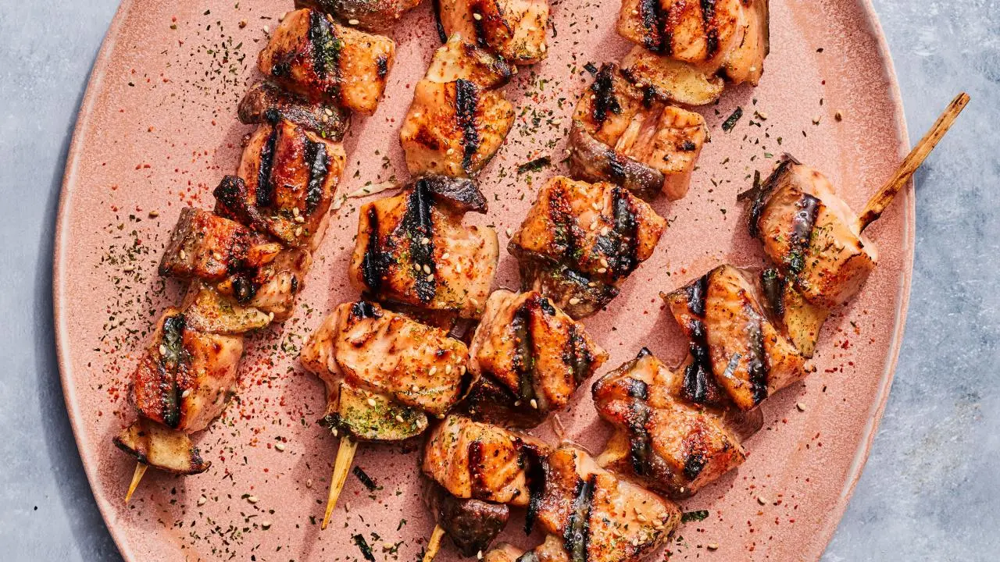

Level: Easy
Total Time: 6 hr 45 min
Active Time: 35 min
Yield: 4 servings
This rendition of kushiyaki — the catch-all term for the popular Japanese technique of grilling skewered foods — is a play on a surf and turf, combining salmon with earthy shiitake mushrooms, for a dose of umami. Here the fish is first marinated in a mirin, sake and miso mixture; the same mixture is also brushed on the skewers during cooking for a burnished glaze. Finish the skewers with a generous shake of furikake or shichimi togarashi, two popular Japanese seasonings.

Four 10-inch bamboo paddle skewers
Recipe from Food Network: Salmon Kushiyaki
Pinch of Yum is a good reference because it uses colored boxes to contain and separate different pieces of information. I like how the large food photography draws attention to the dish while the recipe information is organized clearly.
Baked by Melissa's website is interactive, allowing users to cross out recipe steps as they complete them! I love how minimal and simple the design is. The site provides helpful links to the supplies needed for the recipe.
Purely Elizabeth is a good stylistic reference because its website has playful heading typography and charming use of color. I like how the content is simplified into clear sections with a centered layout.
This website has a strong sense of branding. The oversized sans-serif type often fills the entire page, creating a bold and immersive experience. Rather than relying heavily on photography, the site uses geometric shapes to establish its visual identity.
This website captures the vibe of its coastal location and immediately transports you. I love the bright colors and beach image choices, which create a strong sense of place. I also really like how the centered typography is placed on a plate, making the design playful.
Metaoptia has an engaging home screen and “Enter” page that draws the user into the site. The styled typography reinforces the visual identity and makes the experience feel very unique.